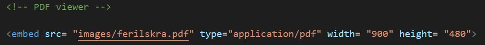
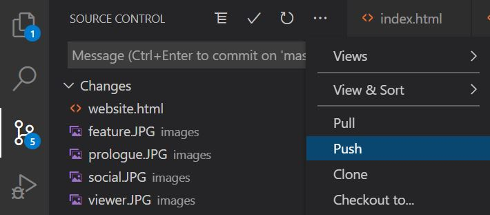

The making of this very website!
The making of this website is the first project of the semester in VÉL403G. This website is to become a log of the future projects I will conduct in this course.
During the course of this project I utilized several programs and services in order to sufficiently complete the task at hand. They are the following:
Visual Studio Code is a free source-code editor made by Microsoft for Windows, Linux and macOS. I have been using VSC for some time now and saw no reason to use another editor. Also, VSC has Git embedded.
GitHub, Inc. is a provider of Internet hosting for software development and version control using Git. GitHub is also something I was familiar with from previous projects and so I already had an account set up. Gitub provides several collaboration features such as bug tracking, feature requests and wikis for every project.
Git is a distributed version-control system for tracking changes in any set of files, originally designed for coordinating work among programmers cooperating on source code during software development.


The coding language used, as per the instructions, is HTML5, a language I was not familar with until now. The choice was to either write your own website from scratch or to modify and customize a preset template. I chose the latter. The creators of this template, Prologue, are HTML5 UP (https://html5up.net), a free source of website templates written in HTML5. Although I was not familiar with HTML, I am somewhat comprehensive in other programming languages (Python, Java) so I did not feel like I had to particularly prepare myself for the modifying of a preset template. Therefore, I just set up a GiHub repository, changed the URL to my liking and began working.
In order to get the result I wanted, I oviously had to make some changes to the original template. Some of these changes demanded new objects be created, such as the ones seen below, the general structure for which I found on https://stackoverflow.com/:
This allowed me to align two or more pictures horizontally on the page.
Another example is this:
This is allows me to present an interactive pdf document within the website, which provided a very neat and useful solution in presenting my resume (can be viewed under "About Me - Resume").
A very handy feature in Visual Studio Code is the option through Source Control to track changes constantly and give them a title/comment, which can be pushed directly to your GitHub repository. This feature makes it very easy to navigate your code's version history.
I used this alot while working on the website and will definitely continue to do so in future projects.